Here we will see simple steps that will permit us to Deploy aws cloud infrastructure with terraform
1.Login Into Terraform Platform
- After the successful Installation of terraform in your pc, now we have to login into terraform platform.To do that you simply open your terminal or for those who are using vscode simply click on terminal and type the command
"terraform login"
, as shown below.step 1.
Enter the command "terraform login"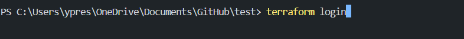
Then click on enter, it will prompt you on a website, where you will need to generate a token, just click on generate a token and copy the token that will be given to you, as shown below.
step 2.
Type "yes" and "enter"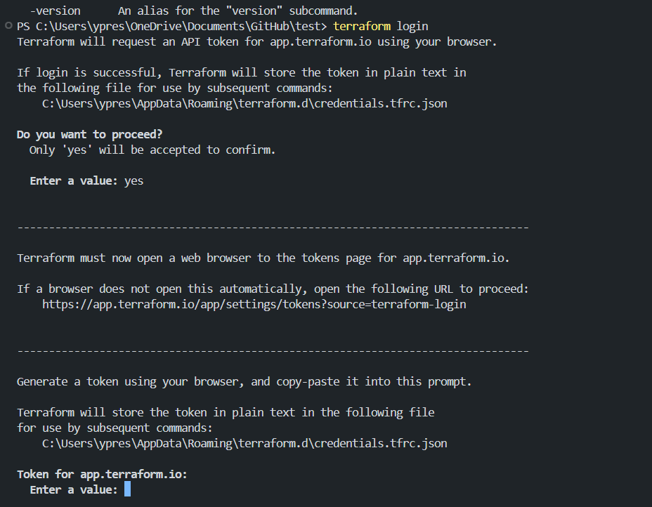
step 3.
click on generate token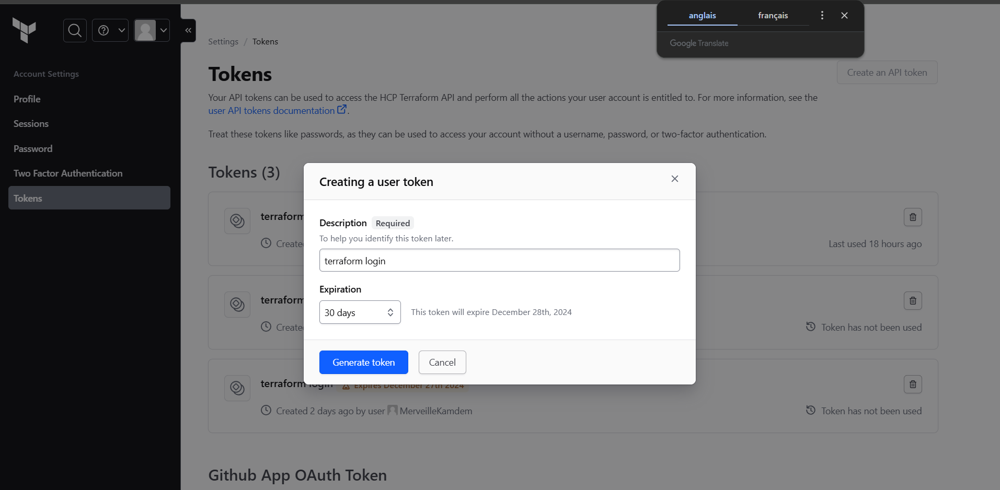
step 4.
copy the token given to you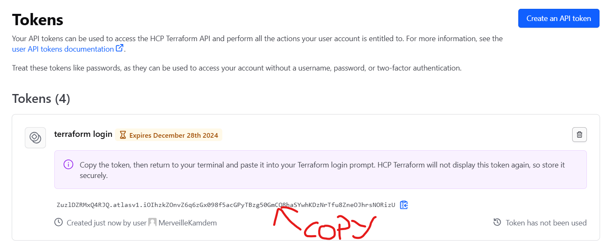
step 5.
paste the token in the prompt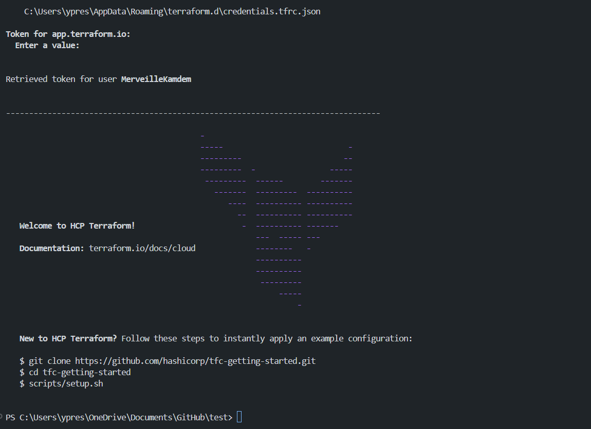
2.Create A New Terraform Configuration File
- After the successful login into terraform platform, now we have to create a new terraform configuration file call main.tf, as shown belowstep 1.
create a main file for it configuration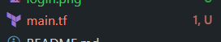
Input The Lines Of Code For The Configuration
Enter in the main file and copy some lines of code for the configuration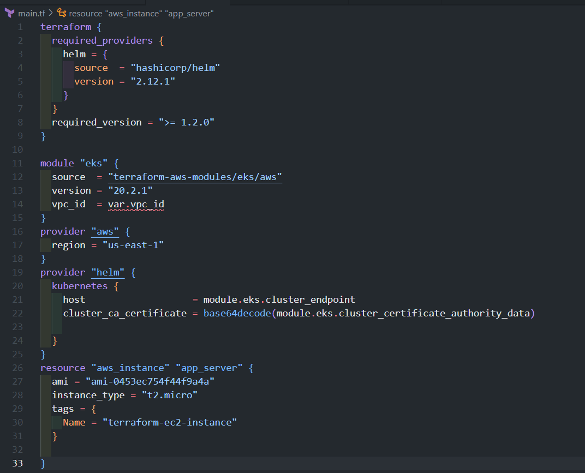
Download extension
You have to download an extension for the code to run properly, as shown below.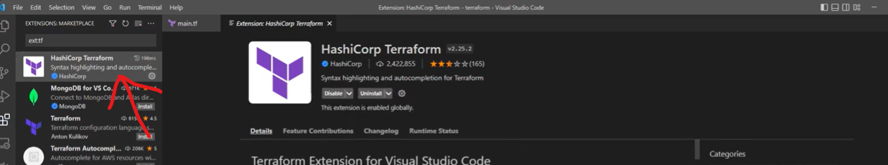
Note
If you don't yes have an instance create in your aws acount, you have to do so, as you can see on the picture below my instance have been create and it's running.
If you don't know how to create one simply go and look videos on youtube.
3Install AWS CLIV2
step 1.
Click on this link "https://awscliamazonaws.com/AWSCLIV2.msi" download the want of window, when okay double click on the package and follow the steps as shown on the pictures below.
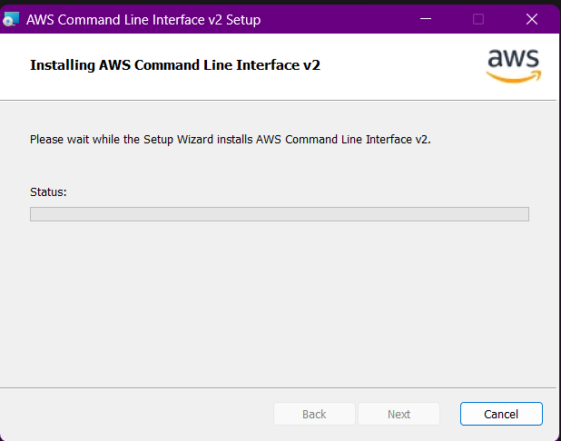
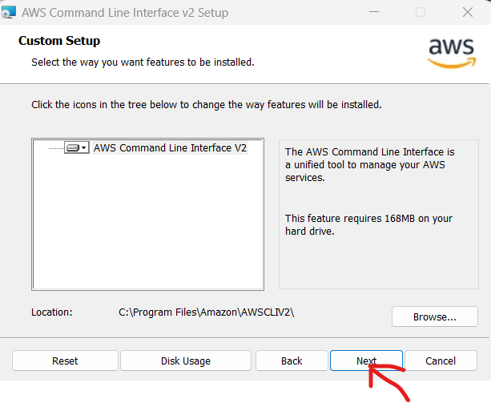
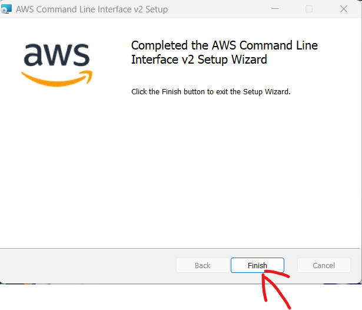
When finish you can enter the command "aws --version" to verify the Installation.
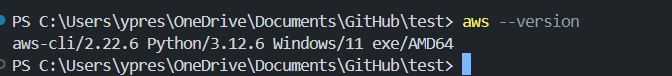
Create A New User
Firstly type IAM in the research an and click on it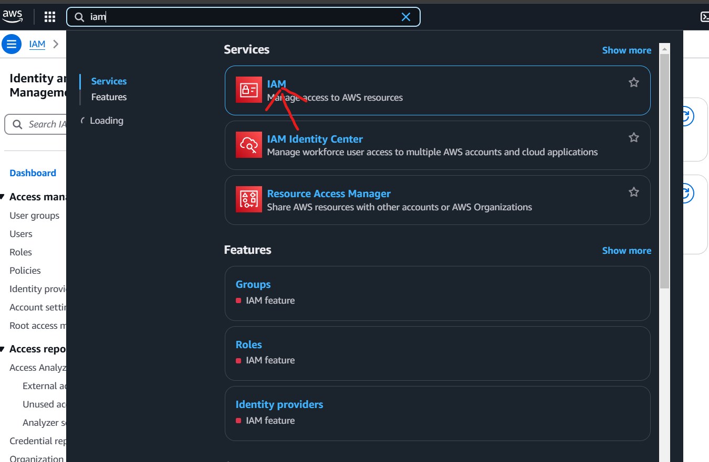
Then click on "user" and "create user", as you can see on the picture below i have already created my, so do create yours.
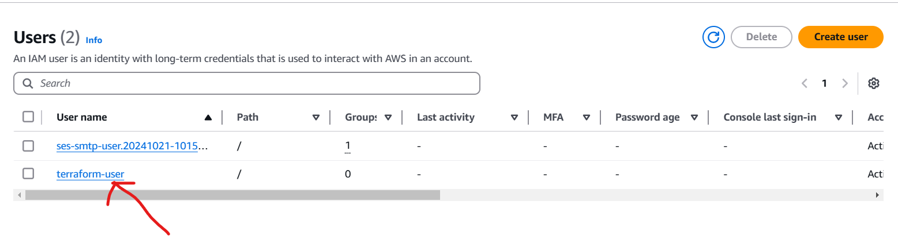
Then you have to create an access key and a secret access key for the user. Click on the user you just created and click on security credentials.
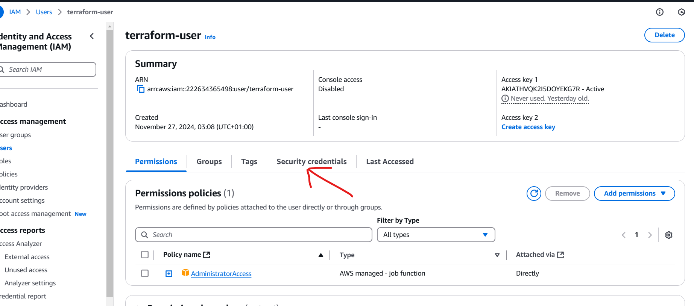
Scroll and click on create access key.
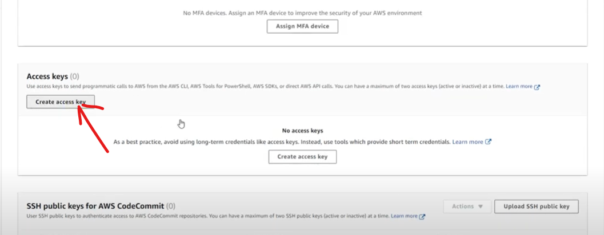
Take the option command line interface and click on next.
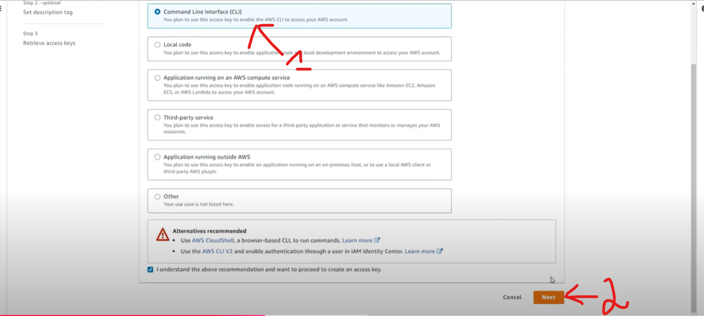
The description is optional, then click on "create access key".
Then open your terminal and type this command "aws configure" and just follow the steps as shown on the picture below
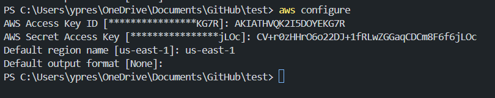